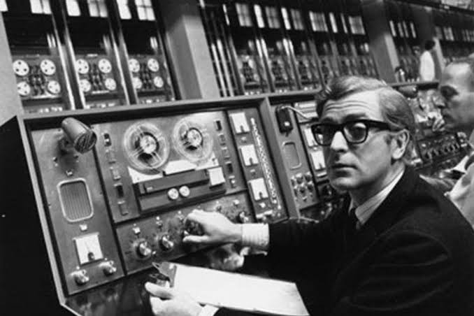
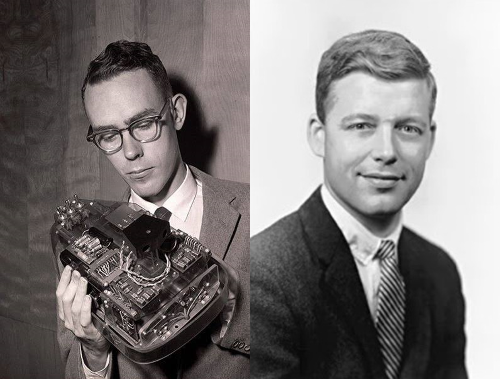
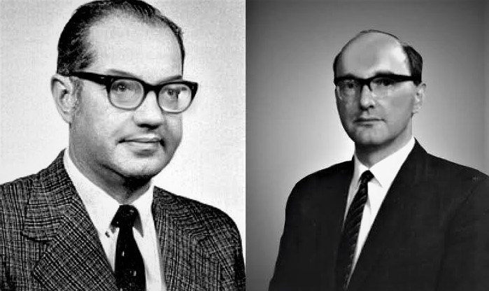
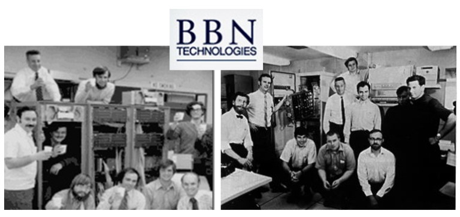
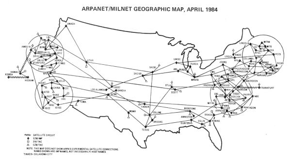

LA RED INTERGALÁCTICA:
INTERNET
A principios de los años sesenta, Joseph Licklider envió un memorándum a sus colegas donde presentó los primeros desafíos
de buscar la interconexión entre ordenadores, generando la interacción entre los usuarios sin importar la distancia.
Licklider pretendía lograr la interconexión intergaláctica tal que, cualquier usuario pudiese acceder desde cualquier punto
a los datos contenidos a esa red.

Joseph Licklider en su estación de trabajo
En ese momento, Licklider era el jefe de la Oficina de Técnicas de Procesamiento de la Información (IPTO) de la
Agencia de Investigación de Proyectos Avanzados de Defensa de los Estados Unidos de América (DARPA). Ahí convenció a
Iván Sutherland y Robert Taylor de la importancia del concepto antes de abandonar la agencia.
En la misma época, Leonard Kleinrock ya trabajaba en el concepto de almacenar y reenviar mensajes, como parte de su tesis doctoral del Instituto de Massachusetts (MIT). Su investigación incluía un importante análisis de la teoría de colas aplicada en las redes de comunicaciones.
En la misma época, Leonard Kleinrock ya trabajaba en el concepto de almacenar y reenviar mensajes, como parte de su tesis doctoral del Instituto de Massachusetts (MIT). Su investigación incluía un importante análisis de la teoría de colas aplicada en las redes de comunicaciones.

Iván Sutherland y Robert Taylor
Mientras tanto, en la RAND Co. Paul Baran trabajaba en una red segura de comunicaciones con fines militares,
donde definía dos claves fundamentales:
- El uso de una red descentralizada con múltiples caminos entre dos puntos.
- La división de mensajes completos en pequeños fragmentos que recorrerían distintos caminos.

Paul Baran y Donald Davies
Al final de 1967, Taylor contactó a Lawrence G. Roberts (investigador del Laboratorio Lincoln, del MIT)
con el propósito de que coordinara la creación de la red, bajo la cobertura de la Agencia ARPA. Al involucrarse en el proyecto,
Roberts planteó que, para crear la infraestructura, se debía utilizar la técnica de Multiplexación en el Tiempo
(realizada por Donald Davies, investigador del National Physical Laboratory).
Mientras Roberts realizaba la presentación del proyecto, uno de los participantes, Wesley A. Clark, propuso utilizar pequeñas computadoras de manera independiente con el fin de gestionar los enlaces de comunicación, permitiendo que la red quedara aislada de las actividades propias de cada computadora. Sobre este concepto comenzó el diseño inicial de ARPANET.
Mientras Roberts realizaba la presentación del proyecto, uno de los participantes, Wesley A. Clark, propuso utilizar pequeñas computadoras de manera independiente con el fin de gestionar los enlaces de comunicación, permitiendo que la red quedara aislada de las actividades propias de cada computadora. Sobre este concepto comenzó el diseño inicial de ARPANET.
Lawrence Roberts y su laboratorio Lincoln en el MIT
La agencia ARPA celebró un concurso con más 140 empresas con el fin de otorgarle al ganador, el financiamiento para la
creación y desarrollo de la nueva red. Para 1969, se le otorgó el contrato de este proyecto a la empresa Bolt, Baranek y Newman
(conocida como BBN Technologies), quienes habían trabajado antes con Licklider.

El equipo de científicos de BBN Technologies
La interacción de sueños, ideas, conocimientos y financiamiento que ocurrió entre personas durante esta época, permitió que para el
21 de noviembre de 1969 se realizara la primera interconexión vía ARPANET entre la Universidad de Standford y UCLA. Para Abril de 1984,
esta interconexión llegó a superar las 500 computadoras alrededor del mundo, gracias al desarrollo del protocolo TCP/IP
(Transmission Control Protocol/Internet Protocol).

Mapa Geográfico de la Red ARPANET en Abril de 1984
Para 1986 se desarrolló NSFNET (National Science Foundation Network), volviéndose una red mucho más rápida que la ARPANET,
logrando disolverla totalmente para 1990. Pero a pesar de eso, se consiguió lo que nunca había ocurrido en la historia de la humanidad:
Conectar a todo el mundo al instante.
Investigado y Programado por: Joel Alfonso Álvarez del Castillo Romo